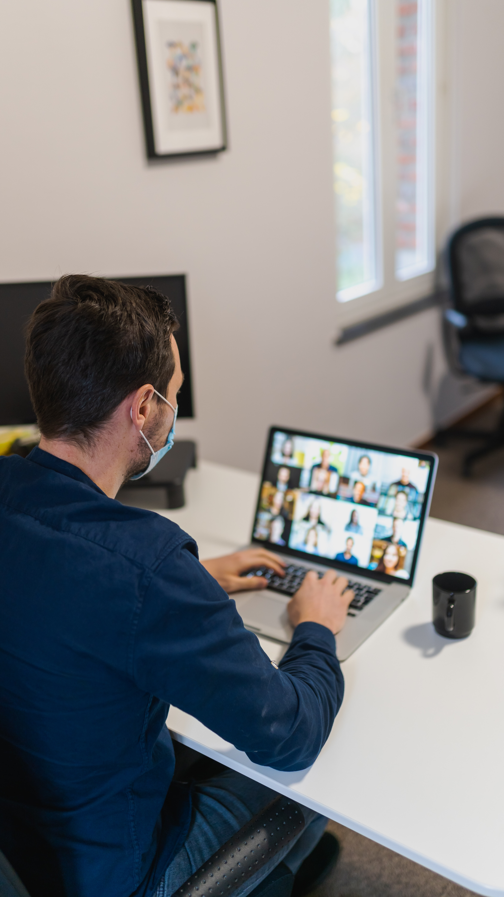
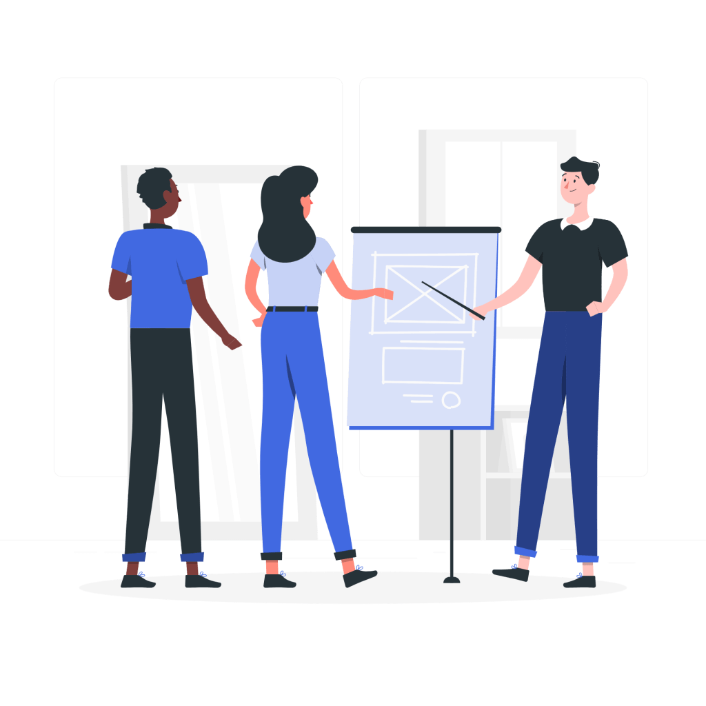
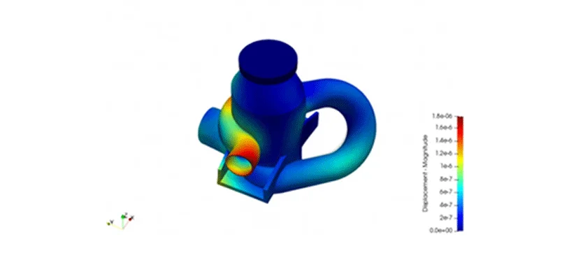
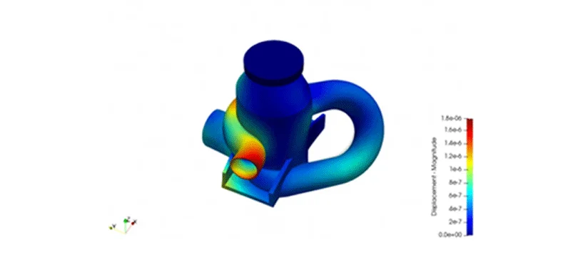

Jasa Konsultasi Teknik
Metode pemecahan masalah dengan pendekatan lateral thinking dan interdispiliner
Jasa Konsultasi
kami memberikan pelayanan jasa konsultasi bidang Teknik untuk optimasi desain, simulasi CFD dan pengembangan produk dengan basis teori, eksperimen dan simulasi.
Dengan konsultasi Bersama kami, user mendapatkan pemahaman komperehensif terkait simulasi CFD dan teori Dari sudut pandang mechanical engineering terkait desain yang diberikan.
Layanan Konsultasi Kami
Layanan yang kami sediakan untuk memenuhi kebutuhan konsultasi Anda

Konsultasi Offline
Kami melayani konsultasi secara offline dengan user, baik di dalam ruangan maupun di luar ruangan, sesuai keadaan user

Konsultasi Online
Untuk memudahkan user dalam berdiskusi terkait permasalahan pada desainnya, kami menawarkan jasa konsultasi online yang mudah dan fleksibel tanpa harus terbaas dengan jarak dan waktu

Site Visit
Tim Infimech siap mengunjungi lokasi lapangan operasional. Apabila diperlukan pertemuan langsung antara user dan tim Infimech di lapangan untuk mempermudah analisis produk
Mengapa Memilih Infimech
Infimech telah berpengalaman menangani berbagai permalahan teknik sejak 2018

Pemahaman Komprehensif
Kami telah bekerja sebagai professional CFD enginer (Computational Fluid Dynamics) sejak 2019, didukung dengan staff dari instansi pendidikan tinggi yang fokus mendalami CFD dan telah melakukan penelitian khusus bidang CFD dan riset kolaborasi dengan berbagai bidang ilmu. kami telah menyelesaikan berbagai proyek dalam riset akademik dan oprimasi produk dalam industri baik dalam negri maupun luar negri.

Lateral Analisis Interdisipliner
Analisis horizontal dan vertikal menjadi metode yang kami berikan kepada user, kami tidak terbatas Pada teori teknik, melainkan teori dasar fisika yang bisa dikolaborasikan dengan berbagai disiplin ilmu, seperti ilmu lingkungan, kesehatan, lintas teknik, fisika dan kimia murni. Sehingga metode lateral analisis interdisiplin ini mampu menyajikan hasil inovasi dari kolaborasi berbagai disiplin ilmu.
Ide Inovatif
Kami memberikan beberapa ide-ide yang dperlukan oleh user, sesuai dengan isu yang ditemukan dari desain. Ide ini berupa desain, pergantian material, pemilihan implementasi yang lain. Dengan ide yang kami berikan, user dapat memutuskan untuk memilih model inovasi yang digunakan untuk mengatasi isu di lapangan.

 
